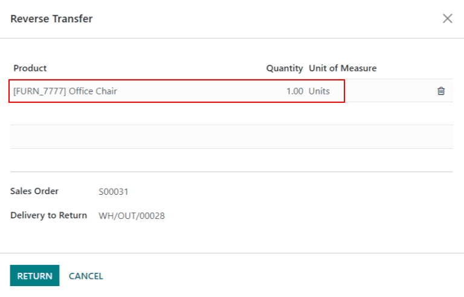

Servicios posventa¶
Puede configurar los servicios posventa desde la aplicación Servicio de asistencia para equipos individuales. Una vez que active esto, los usuarios podrán solicitar reembolsos, procesar devoluciones, generar cupones o programar servicios externos de reparación directamente desde el ticket.
Configuración de los servicios posventa¶
Lo primero que tiene que hacer es activar los servicios posventa en un (o unos) equipo del servicio de asistencia. Para hacer esto debe ir a y seleccione en qué equipos debe estar activo este servicio. Después, baje a la sección Posventas dentro de los ajustes del equipo y seleccione qué opciones activar:
Reembolsos: otorgar una nota de crédito para hacerle el reembolso al cliente, o para ajustar la cantidad que todavía se debe.
Cupones: ofrecer descuentos y productos gratis gracias a un programa de cupones existente.
Devoluciones: iniciar la devolución de un producto que un cliente adquirió, a través de una transferencia en reversa.
Reparaciones: crear órdenes de reparación para productos rotos o defectuosos.
Servicio externo: planear intervención en persona con la aplicación Servicio externo.
Los servicios activados pueden cambiar según el tipo de soporte que un equipo brinda.¶
Advertencia
Ya que todos los servicios posventa dentro de Odoo requieren que se realice una integración con otras aplicaciones, es posible que activarlos resulte en la instalación de módulos o aplicaciones adicionales. Al instalar una aplicación adicional en una base de datos con una aplicación gratis hará que se active el periodo de prueba de 15 días. Si al final de este periodo de prueba no se ha agregado una suscripción de paga a la base de datos, ya no podrá acceder a ella.
Realizar un reembolso con una nota de crédito¶
Una nota de crédito es un documento que se le brinda a un cliente para informales que se les ha acreditado cierta cantidad de dinero. Este documento se puede usar para otorgarle un reembolso completo al cliente o solo para ajustar la cantidad que se debe. Usualmente estas notas se crear desde las aplicaciones Contabilidad o Facturación, pero también es posible hacerlo desde un ticket del Servicio de asistencia.
Nota
Antes de poder generar una nota de crédito es necesario publicar la factura.
Para crear una nota de crédito, vaya al ticket en la aplicación y haga clic en el botón Reembolso que se encuentra en la esquina superior izquierda del tablero del ticket. Después, seleccione la factura correspondiente del menú desplegable Facturas por reembolsar.

Seleccione un Método de crédito de entre las siguientes opciones:
Reembolso parcial: la nota de crédito se crea en borrador y se puede editar antes de enviarla.
Reembolso completo: la nota de crédito se valida de manera automática y se concilia con la factura. Esta es la opción que debe elegir si necesita cancelar una factura.
Reembolso completo y nuevo borrador de factura: la nota de crédito se valida de manera automática y se concilia con la factura. La factura original se duplica como un nuevo borrador. Esta es la opción que debe elegir si necesita modificar una factura que ya validó.
Importante
Si la factura ya se pagó, no tendrá las opciones Método de crédito disponibles.
Realice los cambios necesarios a los detalles de la nota de crédito y haga clic en Revertir. Después haga clic en Confirmar para publicar la nota de crédito.
Ya que se publicó la nota de crédito, aparecerá un botón inteligente Notas de crédito en el ticket del Servicio de asistencia.

Ver también
Generar cupones desde un ticket¶
Puede usar los cupones para alterar el precio de los productos o las órdenes. Los límites al usar un cupón los tiene que definir según reglas condicionales. Para configurar los programas de cupones debe ir a la aplicación Ventas o Sitio web.
Nota
Para poder crear códigos de cupones desde el sitio web es necesario tener instalado el módulo Comercio electrónico.
Para generar un cupón, habra un ticket en el Servicio de asistencia y haga clic en el botón Cupón que se encuentra en la esquina superior izquierda. Seleccione una opción del menú desplegable Programa de cupones y después haga clic en Generar.

Puede copiar el código de cupón desde la ventana emergente (solo tiene que hacer clic en el botón Copiar), o lo puede enviar por correo electrónico si hace clic en Enviar.
Nota
Al mandar un código de cupón por correo, se agregarán como remitentes todas las personas que estén siguiendo el ticket. También puede agregar remitentes adicionales al correo en el campo Remitentes que sale en la ventana emergente Redactar un correo electrónico.
Ya que se generó un código de cupón, en la parte superior del ticket aparecerá un botón inteligente Cupones. Haga clic en este botón para ver el código del cupón, la fecha de caducidad e información adicional.

Ver también
Realice una transferencia inversa para facilitar la devolución de un producto¶
Las devoluciones se completan mediante transferencias inversas, las cuales generan nuevas operaciones en el almacén para los productos que se regresaron. Haga clic en el botón Devolver que se encuentra en la esquina superior izquierda de un ticket para abrir la ventana emergente Revertir traslado.

Nota
El botón Devolver solo aparece en un ticket si el cliente registró una entrega en la base de datos.
De forma predeterminada, la cantidad coincidirá con la cantidad validada en la orden de entrega. Modifique este número en el campo Cantidad si es necesario.
Haga clic en Devolver para confirmar la devolución. Esta acción generará una nueva operación de almacén para el o los productos que se regresaron. En la parte superior del ticket aparecerá un botón Devolver.

Ver también
Enviar productos a reparación desde un ticket¶
Si el ticket se debe a un problema con un producto defectuoso o roto, se puede crear una orden de reparación desde el ticket del Servicio de asistencia y se puede gestionar desde la aplicación Reparaciones.
Para crea una nueva orden de reparación, abra un ticket en el y haga clic en el botón Reparar que se encuentra en la parte superior del ticket.
Al hacer clic en el botón Reparar se abrirá un formulario de referencia de reparación nuevo

Nota
Si se especificó un producto en el campo Producto del ticket, este se agregará al campo Producto a reparar de manera automática. De lo contrario, solo haga clic en el campo y seleccione un producto del menú desplegable.
Llene el campo Descripción de reparación con una breve explicación del problema. Haga clic en el campo Orden de venta y después seleccione la orden de venta de la que se originó el producto que se está reparando. Si se inició el proceso de devolución para el producto, seleccione el número de referencia del menú desplegable en el campo Devolver.
Seleccione un Método de facturación del menú desplegable. Seleccione Antes de la reparación o Después de la reparación para generar una factura antes o después de que el trabajo de reparación se termine. Si selecciona sin factura significa que no se generará factura de este servicio.
Si se necesitan piezas para la reparación, puede añadirlas en la pestaña Partes. Los servicios pueden añadirse como líneas de productos en la pestaña Operaciones. Se puede añadir información adicional para el equipo interno de reparación en la pestaña Notas de reparación. La información para el cliente puede añadirse a la pestaña Notas de cotización, y se añadirá automáticamente al PDF de las cotizaciones generadas a partir de esta Referencia de reparación.
Se añadirá un botón inteligente Reparaciones al ticket, que lo redirigirá a la orden de reparación.

Nota
Una vez que un usuario crea una orden de reparación desde un ticket de Servicio de asistencia, podrá acceder a ella a través del botón inteligente Reparar del ticket, o desde un enlace en el chatter, aunque no tenga acceso a la aplicación Reparación.
Crear una tarea de servicio externo desde un ticket¶
Es posible planificar intervenciones presenciales desde un ticket y gestionarlas con la aplicación Servicio externo. Los clientes con acceso al portal podrán monitorear el progreso de una tarea de Servicio externo del mismo modo que lo harían con un ticket de Servicio de asistencia.
Para crear una nueva tarea, vaya a un ticket de . Haga clic en Crear tarea para abrir la ventana emergente Crear una tarea de servicio externo. Confirme o actualice el título de la tarea.
Nota
El campo Proyecto de la ventana emergente Crear una tarea de servicio externo será el mismo proyecto de Servicio externo que se identificó en la página de configuración del equipo. Para cambiar el proyecto para esta tarea específica, seleccione uno del campo Proyecto.
Para cambiar el proyecto de Servicio externo predeterminado para el equipo, vaya a para seleccionar un Equipo. Vaya a la sección Posventa y seleccione un nuevo proyecto en Servicio externo.
Haga clic en Crear tarea o Crear y ver tarea.

Una vez que cree la tarea, se añadirá un botón inteligente de tareas al ticket, el cuál vinculará la tarea de Servicio externo al ticket.

Ver también